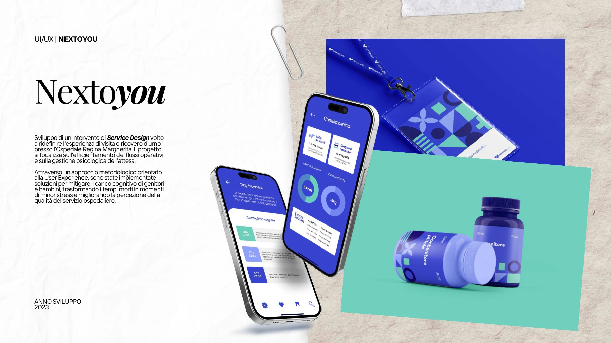
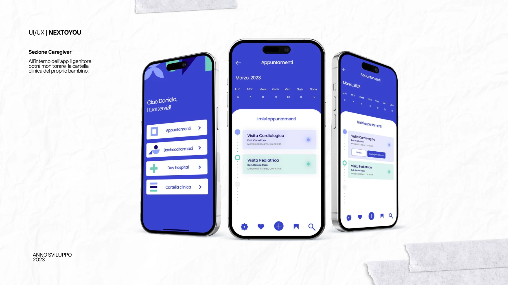
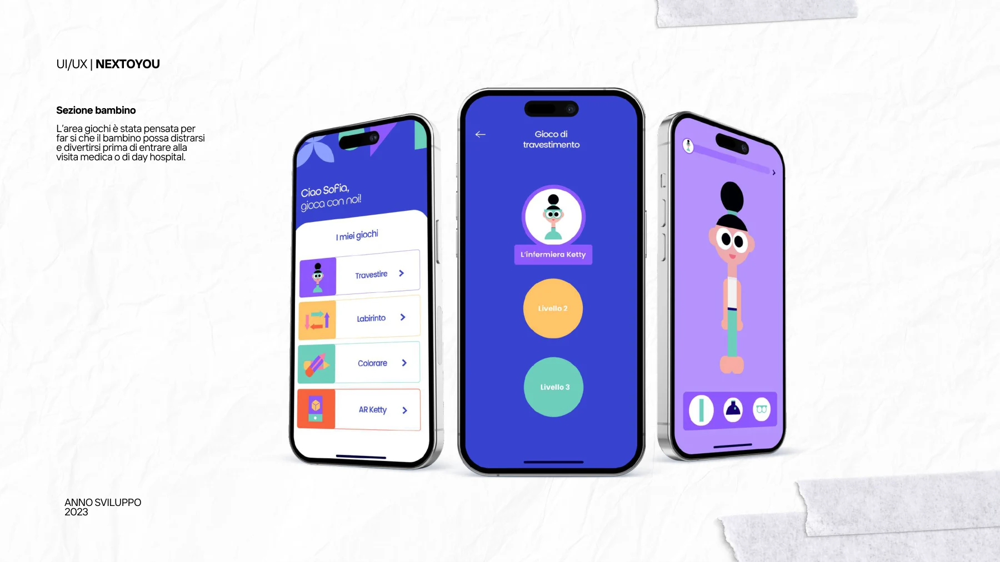
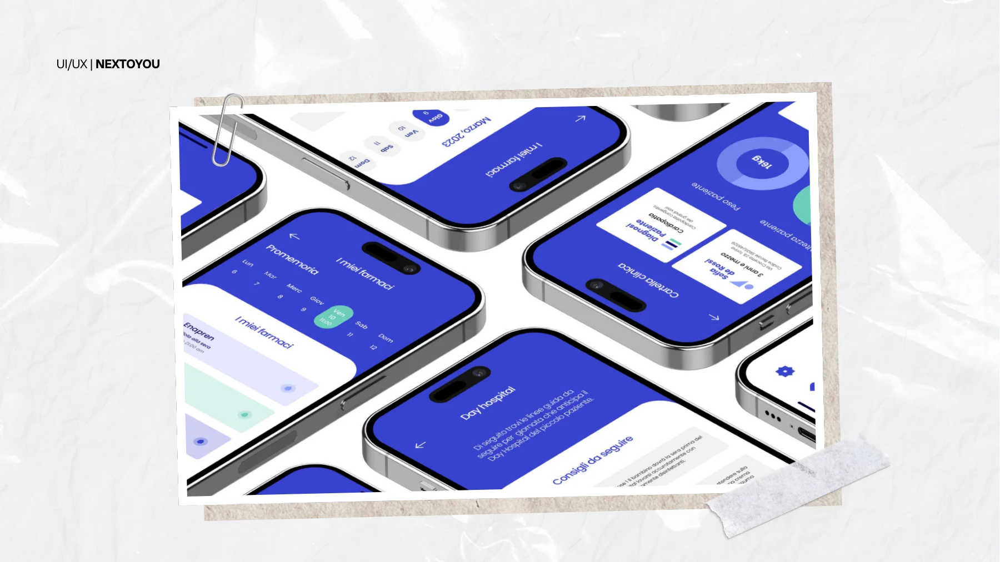
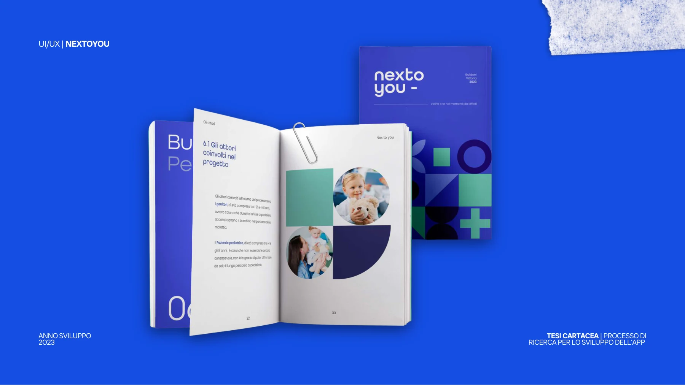

Nextoyou
Un progetto di service design dedicato all’esperienza di visita e day hospital presso l’Ospedale Regina Margherita.
Obiettivo
Ripensare l’attesa di bambini e caregiver attraverso un’esperienza digitale orientata all’informazione e al gioco.
Attività documentate
Progettazione dell’interfaccia con una sezione caregiver per la cartella clinica e un’area giochi per il bambino. Il portfolio documenta anche il percorso di ricerca della tesi.





Progetto successivo